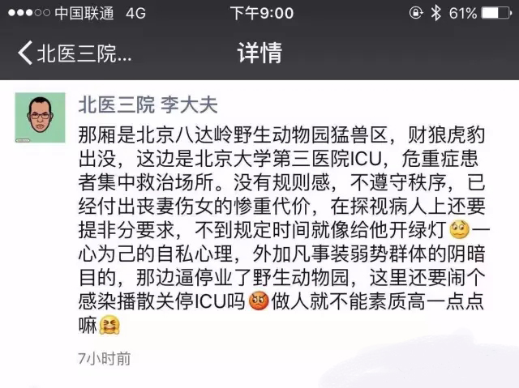
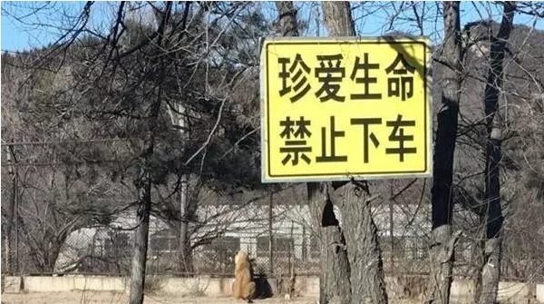
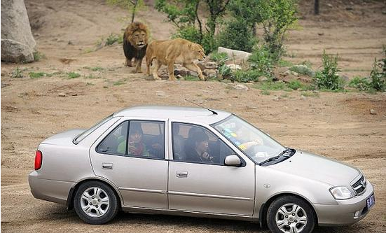
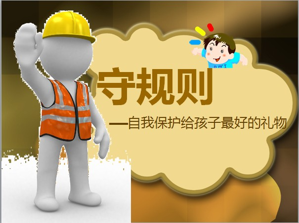

互惠动态
|
|
不守规则,早晚你会是虎口之“物“！
北京八达岭野生动物园老虎伤人事件仍在舆论场持续发酵。7月23日，一家四口在八达岭野生动物园内自驾游，其中两名女子突然先后从车上走下，被躲藏在附近的老虎袭击，造成1死1伤。
观看事发视频监控，该女子一些举止确实令人匪夷所思：无视野生动物园不允许下车的“三令五申”，私自打开车门，从副驾驶走到驾驶位置行动缓慢，中间竟然还有着片刻的犹豫，这些无疑都是“在拿生命开玩笑”。
依此看，这起惨剧的根本原因在于该女子将动物园内的安全警告置若罔闻，暴露着其缺乏理性和规则意识。或许，在该女子潜意识中，禁止下车与禁止插队、禁止吐痰的标识并无什么大的差异。

从某种程度上说，这或许是注定会发生的残酷事件，只是什么时候发生，以及发生在谁身上罢了。因为无视和蔑视规则的行为如此大面积地存在着，它注定会有后果，总会在某个时间，以某种极端的方式呈现在人们眼前。
古希腊哲学家德谟克利特说：“凡事都要讲规则”，由此可见，这个世界早在几千年前就有人意识到了规则的存在性，但即便如此，在今天这样高度文明的社会里，依然有人不守规则。
很显然，女人破坏了公园的规矩——园内禁止下车。

也许她并没有考虑到违反规定的后果是什么，也许当时她处于极度的暴怒之中导致理智失衡根本无法细想下车的后果，虽然最后女人被及时抢救保住了性命，可她的母亲却因此丧命，这到底是一个悲剧，是所有理由都不足以为她的错误开解，而她母亲的死亡，正是对错误最直接的证明。
也许你会觉得这是一个极端案例，但其实，它更像是我们当下社会的一个残忍的隐喻与警示。
平时，我们走在路上，早已对破坏规则的人们见怪不怪，熟视无睹。那些随意横跨护栏的行人，那些在红灯前飞速通过的电动车，那些随意变道、动辄逆行的汽车……其实，从最本质上讲，那个被老虎吃掉的女人和这些不遵守交通规则的人是一样的。只不过，我们行走在公路上，情况没那么极端罢了。这一次，这个女人忘记了自己是在野兽的环伺之下，她早已内化了对于规则的无视，而忘记了潜在的危机。

为什么我排了半天队，那个人插队只用一秒钟？为什么我复习了这么久，别人一张小抄就比我的成绩好？为什么我要等红绿灯，其他人却可以直接过马路？为什么我加班加点，别人几句美言就把成果归功于自己？为什么受伤害的总是善良的人，恶人却能逍遥法外？为什么勤劳致富这么难，腰缠万贯的总是贪污犯……
因为守规则，才是这个世界上最简单的路。
大学那会，可谓是十个考试九个抄，到了期末，大家热衷研究的不是还有哪些重点没看，而是如何把答案更完美地缩印在一张手掌大的纸上，直到有一场考试，其实就是马克思主义基本原理概论，这个考试可以说是随便看看书都能过的，因为大家都是学的文科，可就有那几个同学因为作弊被当场抓包，直接取消学位证。直到毕业前夕，那个作弊的同学说自己为何选择考研，就是因为这场作弊，拿不到学位证。而另外一个同学，去参了军。
去年，出了个男司机暴打女司机的热点，其实最初无非就是为了比别人快上那么几秒，可是差一点，她就比别人快了几十年。
听上去，这些都是偶然，都是千万分之一，然而这些不守规则的习惯的养成，都是长期行为。那个在野生动物园都敢开车门的女人，生活中必然也不会把任何规则放在眼里。出事不是她的不幸，没出事才是她真的走运。
总有家长担心教自己的孩子守规则会吃亏，事实上，在这个处处讲背景的年代，规则，才是对我们这些没有背景的人，最好的保护。它鞭策我们老老实实奋斗，也佑护我们平平安安回家。它让我们每一餐都吃得安安心心，每一觉都睡得踏踏实实。这条路看上去最长最远最累，可是这一路没有密布丛生的荆棘，也没有暴风骤雨，更没有不怀好意的狼外婆。

有个叫李刚或者李双江的爸爸，并不一定保证你一生无忧，可是遵守规则，你永远能活得坦坦荡荡。
再也没有什么比规则更冷冰冰、硬邦邦、毫无人情，你不遵守它，它比老虎还要可怕，当你遵守它，它就是你最坚实的盔甲和最温暖的外衣。
关于互惠，您了解得够多么？
请外国学生来家庭照顾孩子，辅导孩子外语？
只了解这些是不够的！
获取更多信息请参考以下方式：
联系ASC：
电话：86-21-61116069(上海中心）
86-25-66065662（南京中心）
手机：15601666586（可加微信）
Q Q：3259637585
微信：asc-center
邮箱：info@asc-center.com
网站：www.asc-aupair.com

感谢您对我们的关注